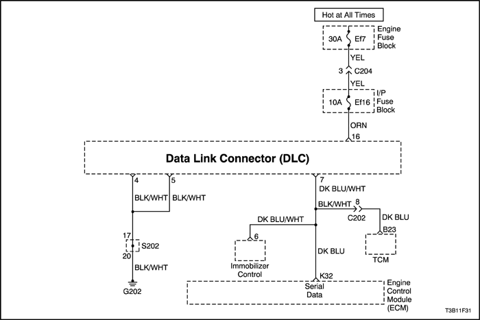
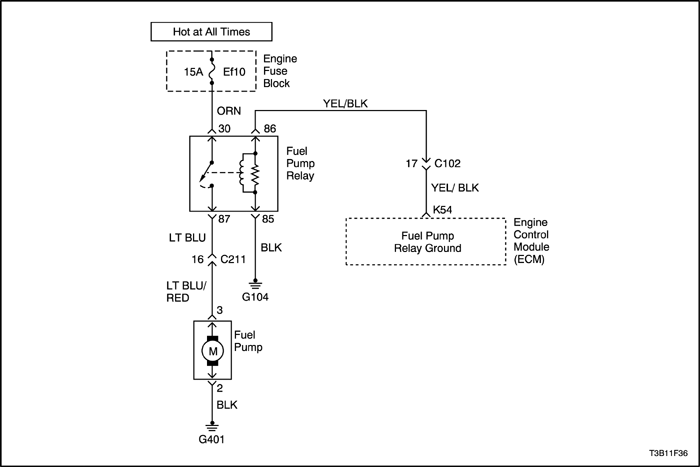

DIAGNÓSTICO
DIAGNÓSTICO DEL SISTEMA
Ayudas para el diagnóstico
Si es evidente que hay un fallo intermitente, siga las siguientes instrucciones:
Comprobaciones preliminares
Realice una inspección visual minuciosa. A menudo, esta inspección contribuye a corregir el problema sin necesidad de realizar otras comprobaciones, pudiendo ahorrarle un tiempo valioso. Compruebe las siguientes anomalías:
- Las conexiones a masa del módulo de control electrónico del motor (ECM) para ver si están limpias, apretadas y en sus posiciones correctas.
- Los manguitos de vacío para ver si están partidos, retorcidos o rotos, y si sus conexiones son correctas como se muestra en la etiqueta de información de control de emisiones del vehículo. Revise detenidamente para constatar si hay algún tipo de fugas u obstrucciones.
- Si hay fugas de aire en la zona de fijación del cuerpo del acelerador y en las superficies de cierre estanco del colector de admisión.
- Compruebe que los cables de encendido no presenten grietas, durezas, trazas de carbón y que estén bien tendidos.
- Compruebe que las conexiones del cableado sean correctas.
- Compruebe que el cableado no esté pellizcado o cortado.
Tablas de códigos de diagnóstico de averías
No utilice las tablas de códigos de diagnóstico de averías (DTCs) para tratar de corregir un fallo intermitente. El fallo debe estar presente para poder localizar el problema.
El uso incorrecto de las tablas de DTCs puede provocar la sustitución innecesaria de piezas.
Conexiones o cableado eléctrico defectuosos
La mayoría de los problemas intermitentes se debe a conexiones o cableados eléctricos defectuosos. Realice una inspección cuidadosa de los circuitos sospechosos y verifique si se presentan los siguientes problemas:
- Mal acoplamiento de las mitades de conectores.
- Terminales que no entren completamente en el cuerpo del conector.
- Terminales dañados o mal conformados. Todos los terminales de los conectores de un circuito con problemas deben revisarse, conformarse o sustituirse cuidadosamente para garantizar la tensión de contacto.
- Conexión defectuosa - entre- el cable y el terminal. Para hacer esto, es necesario retirar el terminal del cuerpo del conector.
Prueba en carretera
Si mediante una inspección visual no se detecta la causa del problema, el vehículo puede conducirse con un voltímetro o un scanner conectado al circuito sospechoso. Una lectura anormal de tensión o del scanner indicará que el problema está en dicho circuito.
Si no se detectaron problemas de cableado o conectores y se almacenó un DTC para un circuito que tiene un sensor (excepto el DTC P0171 y el DTC P0172), sustituya el sensor.
Sistema de combustible
Algunos problemas intermitentes de conducción pueden atribuirse a la mala calidad del combustible. Si de vez en cuando un vehículo funciona de forma irregular, con calado o funciona mal de cualquier otra forma, pregunte al cliente sobre los siguientes hábitos de repostaje:
- ¿Siempre compra el combustible en la misma gasolinera? En caso afirmativo, generalmente se pueden descartar los problemas de calidad de combustible.
- ¿Compra el combustible en cualquier gasolinera que ofrezca el precio más bajo? En caso afirmativo, inspeccione el depósito de combustible para ver si presenta señales de desechos, agua u otro tipo de contaminación.
Procedimiento de memorización del ralentí
Debe ejecutarse el siguiente procedimiento de memorización del ralentí cada vez que se realice una o varias de las acciones mencionadas a continuación:
- Sustitución del nuevo ECM - Sustitución del nuevo cuerpo del acelerador (MTIA, ETC) - Sustitución de la nueva válvula de IAC - Limpieza de depósito de carbonilla en el cuerpo del acelerador - Desconexión de alimentación (cable de la batería, fusible del ECM, etc.) (ECM Delphi solamente) - Reprogramación del software del ECM (ECM Siemens D160 con sistema ETC solamente) - Gire la llave de contacto a la posición ON.
- Restablezca los valores de adaptación con la ayuda del scanner (MTIA, ETC sólo).
- Gire la llave de contacto a la posición OFF durante 15 segundos.
- Gire la llave de contacto a la posición ON durante 5 segundos.
- Gire la llave de contacto a la posición OFF durante 15 segundos (en ECM Siemens D160 con sistema ETC, girar la llave de contacto a la posición OFF durante 35 segundos).
- Arranque el motor en estacionamiento/punto muerto.
- Si el vehículo está equipado con una caja de cambios automática, aplique el freno de estacionamiento. Mientras pisa el pedal del freno, coloque la caja de cambios en D (directa) durante 1 segundo y vuelva a ponerla en P (estacionamiento) (ECM Siemens solamente).
- Deje que el motor funcione hasta que la temperatura del refrigerante supere los 85 °C (185 °F).
- Encienda el A/A durante 10 segundos, en caso de que disponga del mismo.
- Si el vehículo está equipado con una caja de cambios automática, aplique el freno de estacionamiento. Mientras pisa el pedal del freno, coloque la caja de cambios en D (directa) durante 10 segundos.
- Apague el A/A durante 10 segundos, en caso de que disponga del mismo.
- Si el vehículo está equipado con una caja de cambios automática, mientras pisa el pedal del freno, coloque la caja de cambios en posición de estacionamiento/punto muerto.
- Gire la llave de contacto a la posición OFF. El procedimiento de memorización del ralentí ha terminado.
- Espere 15 segundos antes de volver a arrancar el motor (ECM Siemens solamente). (en ECM Siemens D160 con sistema ETC, girar la llave de contacto a la posición OFF durante 35 segundos.)
Procedimiento de memorización de TEC (CORRECCIÓN DE ERROR DE DENTADO)
Cuando se vuelva a transmitir, se sustituya o se inicie un ECM y se haya cambiado el plato de accionamiento del volante motor, siga los siguientes procedimientos para volver a memorizar la variación del sistema de posición del cigüeñal (CKP):
Precaución: Para evitar posibles lesiones al ejecutar el procedimiento de memorización de TEC, aplique siempre el freno de estacionamiento y bloquee las ruedas motrices. Libere el acelerador inmediatamente cuando el motor empiece a desacelerar. Una vez completado el procedimiento de memorización, el control del motor volverá al operador y el motor responderá a la posición del acelerador.
- Coloque la palanca de cambios en estacionamiento o punto muerto.
- Instale el scanner y seleccione el menú "MEMORIZAR TEC" (corrección de error de diente) .
- Arranque el motor con el A/A apagado.
- Mantenga la temperatura del refrigerante del motor por encima de 65°C (149° F).
- Pise el pedal del acelerador superando las 4.000 rpm hasta que se produzca el corte de - suministro de combustible.
- Espere 10-15 segundos.
- Vuelva a realizar este procedimiento si el scanner no muestra el mensaje "OK".
- Gire la llave de contacto a la posición OFF.
- Gire la llave de contacto a la posición ON y, a continuación, borre el código DTC.
Comprobación del sistema de diagnóstico (EOBD) (1.2L SOHC)
Descripción del circuito
La comprobación del sistema de diagnóstico a bordo (EOBD) es el punto de partida para cualquier diagnóstico por reclamación de la conducción del vehículo. Antes de utilizar este procedimiento, realice una comprobación visual cuidadosa del módulo de control electrónico del motor (ECM) y de las conexiones a masa del motor para verificar que estén limpias y bien apretadas.
La comprobación del sistema EOBD es un método organizado para identificar un problema producido por un fallo de funcionamiento del sistema electrónico de control del motor.
Ayudas para el diagnóstico
El fallo intermitente puede deberse a una conexión defectuosa, la rotura -del aislamiento de los cables o a la existencia de un cable roto dentro de su aislamiento. Compruebe que no haya malas conexiones o cableados dañados. Compruebe que el cableado y las conexiones del ECM no tengan acoplamientos incorrectos, cierres rotos, terminales mal conformados o dañados, malas conexiones entre terminales y cables, ni cableados dañados.
Descripción de la prueba
Los siguientes números se refieren a los pasos que aparecen en la tabla de diagnóstico:
- La luz indicadora de fallo de funcionamiento (MIL) debe quedarse encendida con la llave de contacto en posición ON y el motor apagado. De no ser así, ir a "Ayudas para el diagnóstico".
- Comprueba el circuito de datos de Clase 2 y se asegura de que el ECM pueda transmitir datos serie.
- Esta prueba garantiza que el ECM sea capaz de controlar la MIL y que el circuito del controlador de la MIL no esté derivado a masa.
- Si el motor no arranca, consulte el apartado "El motor gira pero no arranca" de esta sección.
- Un parámetro del scanner que no esté dentro de la gama típica puede ayudar a aislar la zona que está causando el problema.
- Este vehículo está equipado con un ECM que utiliza una memoria de sólo lectura programable y borrable electrónicamente (EEPROM). El ECM de repuesto debe ser programado. Consulte el último proceso Techline para la reprogramación del ECM.
Comprobación del sistema de diagnóstico (EOBD) (1.2L SOHC)
| Paso | Medida | Valor(es) | Sí | No |
| 1 | - Gire la llave de contacto a la posición ON.
- Observe la luz indicadora de fallo de funcionamiento (MIL).
¿Se enciende la MIL? | - | Vaya al Paso 2 | |
| 2 | - Gire la llave de contacto a la posición LOCK.
- Enchufe el scanner al conector de diagnóstico (DLC).
- Gire la llave de contacto a la posición ON.
- Intente visualizar los datos del motor del módulo de control electrónico del motor (ECM) con el scanner.
¿Muestra el scanner los datos del motor del ECM? | - | Vaya al Paso 3 | Vaya al Paso 8 |
| 3 | - Utilizando la función de comprobación de salida del scanner, seleccione el control de la luz indicadora de fallos de funcionamiento y déle la orden de que se apague.
- Observe la MIL.
¿Se ha apagado la MIL? | - | Vaya al Paso 4 | |
| 4 | Intente arrancar el motor. ¿Arranca el motor y sigue funcionando? | - | Vaya al Paso 5 | |
| 5 | Seleccione VISUALIZAR DTC con el scanner. ¿Hay almacenado algún código de diagnóstico de averías (DTC)? | - | Vaya al Paso 6 | Vaya al Paso 7 |
| 6 | Observe la pantalla del para ver si se visualizan los DTCs P0107, P0108, P0113, P0118, P0122, P0123, P0712, P1392. ¿Están dos o más de los siguientes DTCs almacenados? | - | | Consulte la tabla de DTCs específica |
| 7 | Compare los valores de datos del ECM visualizados en el scanner con los valores de los datos típicos de comprobación del motor. ¿Son los valores visualizados normales o se acercan a los valores típicos? | - | Ir a "Diagnóstico de salida del ECM" | Ir a comprobación del sistema de componentes indicado |
| 8 | - Gire la llave de contacto a la posición LOCK.
- Desenchufe el conector del ECM.
- Gire la llave de contacto a la posición ON.
- Compruebe si el circuito de datos serie tiene alguna interrupción, derivación a masa o cortocircuito con la tensión. Compruebe también si el circuito de alimentación del encendido del conector de diagnóstico (DLC) está abierto o derivado a masa, y compruebe si hay alguna interrupción en los circuitos de conexión a masa del DLC.
¿Se ha encontrado alguna avería? | - | Vaya al Paso 9 | Vaya al Paso 10 |
| 9 | Repare la interrupción, la derivación a masa o el cortocircuito con la tensión en el circuito de datos serie o en el circuito de alimentación del encendido del DLC. ¿Se ha realizado la reparación? | - | Sistema OK | - |
| 10 | - Intente programar de nuevo el ECM.
- Intente visualizar los datos del ECM con el scanner.
¿Muestra el scanner los datos del motor del ECM? | - | Vaya al Paso 2 | Vaya al Paso 11 |
| 11 | Sustituya el ECM. ¿Se ha realizado la sustitución? | - | Sistema OK | - |



Comprobación del sistema de diagnóstico (EOBD) (1.4L DOHC)
Descripción del circuito
La comprobación del sistema de diagnóstico a bordo (EOBD) es el punto de partida para cualquier diagnóstico por reclamación de la conducción del vehículo. Antes de utilizar este procedimiento, realice una comprobación visual cuidadosa del módulo de control electrónico del motor (ECM) y de las conexiones a masa del motor para verificar que estén limpias y bien apretadas.
La comprobación del sistema EOBD es un método organizado para identificar un problema producido por un fallo de funcionamiento del sistema electrónico de control del motor.
Ayudas para el diagnóstico
El fallo intermitente puede deberse a una conexión defectuosa, la rotura -del aislamiento de los cables o a la existencia de un cable roto dentro de su aislamiento. Compruebe que no haya malas conexiones o cableados dañados. Compruebe que el cableado y las conexiones del ECM no tengan acoplamientos incorrectos, cierres rotos, terminales mal conformados o dañados, malas conexiones entre terminales y cables, ni cableados dañados.
Descripción de la prueba
Los siguientes números se refieren a los pasos que aparecen en la tabla de diagnóstico:
- La luz indicadora de fallo de funcionamiento (MIL) debe quedarse encendida con la llave de contacto en posición ON y el motor apagado. De no ser así, ir a "Ayudas para el diagnóstico".
- Comprueba el circuito de datos de Clase 2 y se asegura de que el ECM pueda transmitir datos serie.
- Esta prueba garantiza que el ECM sea capaz de controlar la MIL y que el circuito del controlador de la MIL no esté derivado a masa.
- Si el motor no arranca, consulte el apartado "El motor gira pero no arranca" de esta sección.
- Un parámetro del scanner que no esté dentro de la gama típica puede ayudar a aislar la zona que está causando el problema.
- Este vehículo está equipado con un ECM que utiliza una memoria de sólo lectura programable y borrable electrónicamente (EEPROM). El ECM de repuesto debe ser programado. Consulte el último proceso Techline para la reprogramación del ECM.
Comprobación del sistema de diagnóstico (EOBD) (1.4L DOHC)
| Paso | Medida | Valor(es) | Sí | No |
| 1 | - Gire la llave de contacto a la posición ON.
- Observe la luz indicadora de fallo de funcionamiento (MIL).
¿Se enciende la MIL? | - | Vaya al Paso 2 | |
| 2 | - Gire la llave de contacto a la posición LOCK.
- Enchufe el scanner al conector de diagnóstico (DLC).
- Gire la llave de contacto a la posición ON.
- Intente visualizar los datos del motor del módulo de control electrónico del motor (ECM) con el scanner.
¿Muestra el scanner los datos del motor del ECM? | - | Vaya al Paso 3 | Vaya al Paso 8 |
| 3 | - Utilizando la función de comprobación de salida del scanner, seleccione el control de la luz indicadora de fallos de funcionamiento y déle la orden de que se apague.
- Observe la MIL.
¿Se ha apagado la MIL? | - | Vaya al Paso 4 | |
| 4 | Intente arrancar el motor. ¿Arranca el motor y sigue funcionando? | - | Vaya al Paso 5 | |
| 5 | Seleccione VISUALIZAR DTC con el scanner. ¿Hay almacenado algún código de diagnóstico de averías (DTC)? | - | Vaya al Paso 6 | Vaya al Paso 7 |
| 6 | Observe la pantalla del para ver si se visualizan los DTCs P0107, P0108, P0113, P0118, P0122, P0123, P0712, P1392. ¿Están dos o más de los siguientes DTCs almacenados? | - | | Consulte la tabla de DTCs específica |
| 7 | Compare los valores de datos del ECM visualizados en el scanner con los valores de los datos típicos de comprobación del motor. ¿Son los valores visualizados normales o se acercan a los valores típicos? | - | | Ir a comprobación del sistema de componentes indicado |
| 8 | - Gire la llave de contacto a la posición LOCK.
- Desenchufe el conector del ECM.
- Gire la llave de contacto a la posición ON.
- Compruebe si el circuito de datos serie tiene alguna interrupción, derivación a masa o cortocircuito con la tensión. Compruebe también si el circuito de alimentación del encendido del conector de diagnóstico (DLC) está abierto o derivado a masa, y compruebe si hay alguna interrupción en los circuitos de conexión a masa del DLC.
¿Se ha encontrado alguna avería? | - | Vaya al Paso 9 | Vaya al Paso 10 |
| 9 | Repare la interrupción, la derivación a masa o el cortocircuito con la tensión en el circuito de datos serie o en el circuito de alimentación del encendido del DLC. ¿Se ha realizado la reparación? | - | Sistema OK | - |
| 10 | - Intente programar de nuevo el ECM.
- Intente visualizar los datos del ECM con el scanner.
¿Muestra el scanner los datos del motor del ECM? | - | Vaya al Paso 2 | Vaya al Paso 11 |
| 11 | Sustituya el ECM. ¿Se ha realizado la sustitución? | - | Sistema OK | - |
Activación de DTCs múltiples de los sensores de información del ECM
Descripción del circuito
El módulo de control electrónico del motor (ECM) supervisa a los diferentes sensores para determinar las condiciones de funcionamiento del motor. El ECM controla la alimentación de combustible, el avance de la chispa, el funcionamiento de la caja de cambios y el funcionamiento del dispositivo de control de emisiones en función de las entradas procedentes de los sensores.
El ECM suministra la conexión a masa a todos los sensores. El ECM aplica una referencia de 5 voltios, a través de una resistencia "pull-up", y controla la tensión existente entre el sensor y la resistencia para determinar el estado del sensor de temperatura de refrigerante del motor (ECT) y del sensor de temperatura del aire de admisión (IAT). El ECM le suministra una señal de referencia de 5 voltios y una señal de masa al sensor de posición de la aguja de la válvula de recirculación de gases de escape (EGR), al sensor de posición del acelerador (TP), al sensor de presión absoluta del colector de admisión (MAP) y al sensor de presión del depósito de combustible. El ECM supervisa las señales de retroalimentación independientes de cada uno de estos sensores para determinar sus estados de funcionamiento.
Ayudas para el diagnóstico
Cerciórese de revisar el ECM y las conexiones a masa del motor para verificar que estén apretadas y limpias.
Un cortocircuito con la tensión en uno de los circuitos de los sensores puede hacer que se active uno o varios de los siguientes DTCs: P0108, P0113, P0118, P0123, P1106, P1111, P1115, P1121, P0463, P0533.
Si un circuito de entrada del sensor ha tenido un cortocircuito con la tensión, cerciórese de que el sensor no esté dañado. Un sensor dañado indicará una tensión alta o baja después de que se haya reparado el circuito afectado. Si el sensor está dañado, sustitúyalo.
Una interrupción en el circuito de conexión a masa del sensor entre el ECM y el empalme hará que se active uno o varios de los siguientes DTCs: P0107, P0108, P0113, P0118, P0122, P0123, P1106, P1111, P1115, P1121, P0462, P0532.
Una derivación a masa o una interrupción en el circuito de referencia de 5 voltios entre el ECM y el empalme hará que se active uno o varios de los siguientes DTCs: P0107, P0112, P0117, P0122, P1107, P1112, P1114, P1122, P0462, P0532.
Compruebe las siguientes anomalías:
- Compruebe si hay alguna conexión defectuosa en el ECM. Revise los conectores de cableado para verificar si hay terminales desconectados, mal acoplamiento, cierres rotos, terminales mal conformados o dañados y malas conexiones entre terminales y cables.
- Compruebe si el cableado está dañado. Si el cableado parece estar en buen estado, fíjese en el valor para un sensor afectado que se visualiza en el scanner, con la llave de contacto en posición ON y el motor apagado, mientras mueve los conectores y el cableado relacionados con los sensores afectados. Cualquier variación en el valor visualizado para el sensor afectado indicará la ubicación del fallo.
Descripción de la prueba
El (los) número(s) siguiente(s) hace(n) referencia al (a los) paso(s) que aparece(n) en la tabla de diagnóstico:
- La comprobación del sistema de diagnóstico (EOBD) del tren de potencia avisa al técnico para que realice algunas comprobaciones básicas y almacene los datos instantáneos y los registros de averías en el scanner si procediese. Esto crea una copia electrónica de los datos recogidos cuando ocurrió el fallo de funcionamiento. La información se almacena en el scanner para una consulta posterior.
- Una válvula de EGR puede dejar escapar una pequeña cantidad de corriente desde el circuito de alimentación del encendido hasta el circuito de referencia de 5 voltios. Si el problema no se presenta estando la válvula de EGR desconectada, sustitúyala.
- Si un circuito de entrada del sensor ha tenido un cortocircuito con la tensión, cerciórese de que el sensor no esté dañado. Un IAT o ECT dañado indicará una tensión alta o baja después de que se haya reparado el circuito afectado. Un sensor de TP, MAP, de posición de la aguja de EGR o de presión del depósito de combustible indicará una tensión alta o baja o puede quedar atascado en un valor fijo después de que se haya reparado el circuito afectado. Si el sensor está dañado, sustitúyalo.
- El ECM de repuesto debe ser reprogramado. Consulte el último proceso Techline para la reprogramación del ECM.
Activación de DTCs múltiples de los sensores de información del ECM
| Paso | Medida | Valor(es) | Sí | No |
| 1 | Efectúe una comprobación del sistema de diagnóstico (EOBD). ¿Se ha efectuado la comprobación? | - | Vaya al Paso 2 | |
| 2 | - Gire la llave de contacto a la posición LOCK.
- Desenchufe el conector del módulo de control electrónico del motor (ECM).
- Gire la llave de contacto a la posición ON.
- Compruebe si el circuito de referencia de 5 V presenta las siguientes anomalías:
- Mala conexión en el ECM.
- Circuito abierto entre el conector del ECM y los sensores afectados con derivación a masa o en cortocircuito con la tensión.
- Si se encuentra el fallo, localice y repare la interrupción o el cortocircuito según sea necesario.
¿Se ha encontrado alguna avería? | - | Vaya al Paso 19 | Vaya al Paso 3 |
| 3 | - Compruebe si el circuito de conexión a masa del sensor presenta las siguientes anomalías:
- Mala conexión en el ECM o en los sensores afectados.
- Interrupción entre el conector del ECM y los sensores afectados.
- Si se detecta algún problema, haga las reparaciones necesarias.
¿Se ha encontrado alguna avería? | - | Vaya al Paso 19 | Vaya al Paso 4 |
| 4 | Mida la tensión del circuito de señal del sensor de posición de la aguja de la válvula de recirculación de gases de escape (EGR), entre el conector del cableado del ECM y masa. ¿Se aproxima la tensión al valor especificado? | 0 V | Vaya al Paso 5 | Vaya al Paso 9 |
| 5 | Mida la tensión del circuito de señal del sensor de presión absoluta del colector de admisión (MAP), entre el conector del cableado del ECM y masa. ¿Se aproxima la tensión al valor especificado? | 0 V | Vaya al Paso 6 | Vaya al Paso 12 |
| 6 | Mida la tensión del circuito de señal del sensor de posición del acelerador (TP), entre el conector del cableado del ECM y masa. ¿Se aproxima la tensión al valor especificado? | 0 V | Vaya al Paso 7 | Vaya al Paso 12 |
| 7 | Mida la tensión del circuito de señal del sensor de temperatura del aire de admisión (IAT), entre el conector del cableado del ECM y masa. ¿Se aproxima la tensión al valor especificado? | 0 V | Vaya al Paso 8 | Vaya al Paso 13 |
| 8 | Mida la tensión del circuito de señal del sensor de temperatura del refrigerante del motor (ECT), entre el conector del cableado del ECM y masa. ¿Se aproxima la tensión al valor especificado? | 0 V | Vaya al Paso 16 | Vaya al Paso 14 |
| 9 | - Desenchufe el conector de la válvula de EGR.
- Mida la tensión del circuito de señal del sensor de posición de la aguja de la válvula de EGR, entre el conector del cableado del ECM y masa.
¿Se aproxima la tensión al valor especificado? | 0 V | Vaya al Paso 10 | Vaya al Paso 15 |
| 10 | Sustituya la válvula de EGR. ¿Se ha realizado la sustitución? | - | Vaya al Paso 19 | - |
| 11 | Localice y repare el cortocircuito con la tensión en el circuito de señal del MAP. ¿Se ha realizado la reparación? | - | Vaya al Paso 19 | - |
| 12 | Localice y repare el cortocircuito con la tensión en el circuito de señal del sensor de TP. ¿Se ha realizado la reparación? | - | Vaya al Paso 19 | - |
| 13 | Localice y repare el cortocircuito con la tensión en el circuito de señal del IAT. ¿Se ha realizado la reparación? | - | Vaya al Paso 19 | - |
| 14 | Localice y repare el cortocircuito con la tensión en el circuito de señal del ECT. ¿Se ha realizado la reparación? | - | Vaya al Paso 19 | - |
| 15 | Localice y repare el cortocircuito con la tensión en el circuito de señal del sensor de posición de la aguja de la válvula de EGR. ¿Se ha realizado la reparación? | - | Vaya al Paso 19 | - |
| 16 | Mida la tensión del circuito de señal del sensor de presión del depósito de combustible entre el conector del cableado del ECM y masa. ¿Se aproxima la tensión al valor especificado? | 0 V | Vaya al Paso 18 | Vaya al Paso 17 |
| 17 | Localice y repare el cortocircuito con la tensión en el circuito de señal del sensor de presión del depósito de combustible. ¿Se ha realizado la sustitución? | - | Vaya al Paso 19 | - |
| 18 | Sustituya el ECM. ¿Se ha realizado la reparación? | - | Vaya al Paso 19 | - |
| 19 | - Borre los DTCs utilizando el scanner.
- Ponga en marcha el motor y déjelo en ralentí hasta que alcance la temperatura normal de funcionamiento.
- Haga funcionar el vehículo en las condiciones requeridas para que se activen los DTCs, según se especifica en esta sección.
¿Indica el scanner que este diagnóstico se ha realizado y superado? | - | Vaya al Paso 20 | Vaya al Paso 2 |
| 22 | Compruebe si se activa algún otro DTC. ¿Se activa algún DTC no diagnosticado? | - | Consulte la tabla de DTCs específica | Sistema OK |
El motor gira pero no arranca (1.2L SOHC)
Descripción de la prueba
El (los) número(s) que sigue(n) a continuación corresponde(n) al (a los) paso(s) de la tabla de diagnóstico.
- La comprobación del sistema de diagnóstico (EOBD) avisa al técnico para que realice algunas comprobaciones básicas y almacene los datos instantáneos y los registros de averías en el scanner si procediese. Esto crea una copia electrónica de los datos recogidos cuando ocurrió el fallo de funcionamiento. La información se almacena en el scanner para una consulta posterior.
- La comprobación del sistema de diagnóstico (EOBD) avisa al técnico para que realice algunas comprobaciones básicas y almacene los datos instantáneos y los registros de averías en el scanner si procediese. Esto crea una copia electrónica de los datos recogidos cuando ocurrió el fallo de funcionamiento. La información se almacena en el scanner para una consulta posterior.
- Mediante una prueba de compresión se puede determinar si el motor tiene capacidad mecánica para funcionar.
- Mediante una prueba de compresión se puede determinar si el motor tiene capacidad mecánica para funcionar.
- Es importante comprobar si llega la chispa de todos los cables de encendido. Si la chispa llega de uno a tres de los terminales de la bobina de encendido, el sensor de posición del cigüeñal (CKP) está bien.
- Es importante comprobar si llega la chispa de todos los cables de encendido. Si la chispa llega de uno a tres de los terminales de la bobina de encendido, el sensor de posición del cigüeñal (CKP) está bien.
- Para comprobar las salidas del módulo de control electrónico del motor (ECM) para la señal de temporización de chispa del encendido electrónico, se recomienda el uso de un osciloscopio para ver las diversas señales de tensión. Si se miden estas salidas con un voltímetro, se pueden producir errores intermitentes que el voltímetro es incapaz de detectar.
- Este paso comprueba el funcionamiento correcto del control que el ECM hace del circuito de la bomba de combustible.
- Este paso verifica que el ECM esté suministrando una señal de masa para hacer funcionar los inyectores de combustible. Si no hay masa presente cuando se arranca el motor y el cableado de los inyectores de combustible está bien, el fallo se produce en el ECM.
El motor gira pero no arranca (1.2L SOHC)
Precaución: Para evitar una descarga eléctrica, utilice sólo alicates aislados eléctricamente cuando manipule los cables de encendido con el motor en marcha.
Precaución: No aplaste ni obstruya las tuberías de combustible de nylon. El daño a las tuberías podría causar fugas de combustible, lo que a su vez podría provocar un incendio o lesiones personales.
| Paso | Medida | Valor(es) | Sí | No |
| 1 | Efectúe una comprobación del sistema de diagnóstico (EOBD). ¿Se ha efectuado la comprobación? | - | Vaya al Paso 2 | |
| 2 | Arranque el motor. ¿Arranca el motor y sigue funcionando? | - | Sistema OK | Vaya al Paso 3 |
| 3 | Realice una prueba de compresión de los cilindros. ¿El valor de la compresión de todos los cilindros es igual o superior al valor especificado? | 689 kPa (100 lbs/pulg2) | Vaya al Paso 7 | Vaya al Paso 4 |
| 4 | Revise la alineación de la correa de distribución. ¿Está alineada la correa de distribución? | - | Vaya al Paso 6 | Vaya al Paso 5 |
| 5 | Alinee o sustituya la correa de distribución si fuera necesario. ¿Se ha realizado la reparación? | - | Vaya al Paso 2 | - |
| 6 | Repare los daños internos del motor si es necesario. ¿Se ha realizado la reparación? | - | Vaya al Paso 2 | - |
| 7 | Revise el fusible de la bomba de combustible. ¿Se ha encontrado la avería? | - | Vaya al Paso 8 | Vaya al Paso 9 |
| 8 | Sustituya el fusible. ¿Se ha realizado la reparación? | - | Vaya al Paso 2 | - |
| 9 | Compruebe si llega la chispa de todos los cables de encendido al arrancar el motor. ¿Llega la chispa de todos los cables de encendido? | - | Vaya al Paso 23 | Vaya al Paso 10 |
| 10 | - Mida la resistencia de los cables de encendido.
- Sustituya cualquier cable de encendido cuya resistencia sea superior al valor especificado.
- Compruebe si llega la chispa de todos los cables de encendido.
¿Llega la chispa de todos los cables de encendido? | 30000 Ω | Vaya al Paso 2 | Vaya al Paso 11 |
| 11 | - Gire la llave de contacto a la posición OFF.
- Desenchufe el conector del sensor de posición del cigüeñal (CKP).
- Gire la llave de contacto a la posición ON.
- Mida la tensión entre los siguientes terminales:
- Terminales 1 y 3 del conector del CKP.
- Terminales 2 y 3 del conector del CKP.
- Terminal 1 del conector del CKP y masa.
- Terminal 2 del conector del CKP y masa.
¿Está la tensión dentro del valor especificado? | ≈ 1,4 V | Vaya al Paso 13 | Vaya al Paso 12 |
| 12 | Compruebe si hay algún circuito abierto o algún cortocircuito en los cables, entre el conector del CKP y el conector del ECM, y repárelo si fuera necesario. ¿Se ha realizado la reparación? | - | Vaya al Paso 2 | - |
| 13 | - Desenchufe el conector de la bobina de encendido del sistema de encendido (EI) para evitar que el vehículo arranque.
- Mida la tensión en los terminales 85 y 54 del conector del ECM por la parte posterior.
¿Está la tensión próxima al valor especificado? | 1,4 V con la llave de contacto en posición ON, 1,6 V al arrancar | Vaya al Paso 15 | Vaya al Paso 14 |
| 14 | Sustituya el CKP. ¿Se ha realizado la reparación? | - | Vaya al Paso 2 | - |
| 15 | - Gire la llave de contacto a la posición OFF.
- Desenchufe el conector eléctrico en la bobina del sistema EI.
- Conecte una lámpara de pruebas entre el terminal B del conector de la bobina de encendido del sistema EI y masa.
- Gire la llave de contacto a la posición ON.
¿Se enciende la lámpara de pruebas? | - | Vaya al Paso 17 | Vaya al Paso 16 |
| 16 | Compruebe si hay alguna interrupción en el cable, entre la batería y el terminal B del conector de la bobina de encendido del sistema de EI y repárelo si fuera necesario. ¿Se ha realizado la reparación? | - | Vaya al Paso 2 | - |
| 17 | - Gire la llave de contacto a la posición OFF.
- Desenchufe el conector del ECM y el conector de la bobina del sistema EI.
- Mida la resistencia entre los siguientes terminales:
- Terminal A de la bobina de encendido y terminal 31 del conector del ECM.
- Terminal C de la bobina de encendido y terminal 32 del conector del ECM.
¿Está la resistencia dentro de los valores especificados? | 0 Ω | Vaya al Paso 19 | Vaya al Paso 18 |
| 18 | Compruebe si hay algún circuito abierto y repárelo si fuera necesario. ¿Se ha realizado la reparación? | - | Vaya al Paso 2 | - |
| 19 | - Mida la resistencia entre los siguientes terminales:
- Terminal 1 y 2 de la bobina de encendido.
- Terminal 2 y 3 de la bobina de encendido.
¿La resistencia está dentro de los valores especificados? - Retire el cable de tensión alta.
- Mida la resistencia entre los siguientes terminales:
- Entre el 1 y el 4
- Entre el 2 y el 3
¿La resistencia está dentro de los valores especificados? | 0,9 Ω 5,3 kΩ | Vaya al Paso 21 | Vaya al Paso 20 |
| 20 | Sustituya la bobina de encendido del sistema EI. ¿Se ha realizado la reparación? | - | Vaya al Paso 2 | - |
| 21 | - Compruebe que no haya daños ni malas conexiones en los cables de encendido y haga las reparaciones necesarias.
- Enchufe el conector de la bobina de encendido del sistema EI y el conector del ECM.
- Compruebe si llega la chispa de todos los cables de encendido.
¿Llega la chispa de todos los cables de encendido? | - | Vaya al Paso 2 | Vaya al Paso 22 |
| 22 | Sustituya el ECM. ¿Se ha realizado la reparación? | - | Vaya al Paso 2 | - |
| 23 | - Gire la llave de contacto a la posición OFF.
- Conecte un manómetro de presión de combustible.
- Arranque el motor.
¿Hay presión de combustible? | - | Vaya al Paso 26 | Vaya al Paso 24 |
| 24 | - Gire la llave de contacto a la posición OFF.
- Desenchufe el conector eléctrico en la bomba de combustible.
- Conecte una lámpara de pruebas entre los terminales 2 y 3 de la bomba de combustible.
- Gire la llave de contacto a la posición ON.
- Con la llave de contacto en la posición ON, la lámpara de pruebas debería permanecer encendida durante el tiempo especificado.
¿Se enciende la lámpara de pruebas? | 2 segundos | Vaya al Paso 25 | Vaya al Paso 34 |
| 25 | Sustituya la bomba de combustible. ¿Se ha realizado la reparación? | - | Vaya al Paso 2 | - |
| 26 | ¿Está la presión de combustible dentro del valor especificado? | 283-324 kPa (41-47 lbs/pulg2) | Vaya al Paso 27 | Vaya al Paso 29 |
| 27 | Compruebe que el combustible no esté contaminado. ¿Está el combustible contaminado? | - | Vaya al Paso 28 | Vaya al Paso 41 |
| 28 | - Extraiga el combustible contaminado del depósito de combustible.
- Limpie el depósito de combustible si es necesario.
¿Se ha realizado la reparación? | - | Vaya al Paso 2 | - |
| 29 | - Compruebe que el filtro de combustible no esté obstruido.
- Compruebe que las tuberías de combustible no estén retorcidas ni obstruidas.
- Repare o sustituya según sea necesario.
- Mida la presión del combustible.
¿Está la presión de combustible dentro del valor especificado? | 283-324 kPa (41-47 lbs/pulg2) | Vaya al Paso 2 | Vaya al Paso 30 |
| 30 | - Desconecte la tubería de vacío del regulador de presión de combustible.
- Compruebe que no haya combustible en la tubería de vacío.
- Compruebe que no haya combustible en el orificio de vacío del regulador de presión de combustible.
¿Hay combustible? | - | Vaya al Paso 31 | Vaya al Paso 32 |
| 31 | Sustituya el regulador de presión de combustible. ¿Se ha realizado la reparación? | - | Vaya al Paso 2 | - |
| 32 | - Retire el conjunto de la bomba de combustible del depósito de combustible.
- Compruebe que el transmisor de la bomba de combustible y los manguitos de acoplamiento de combustible no presenten obstrucciones.
- Compruebe que el filtro de combustible del depósito no esté obstruido.
¿Se ha encontrado la avería? | - | Vaya al Paso 33 | Vaya al Paso 25 |
| 33 | Sustituya el transmisor de la bomba de combustible, el - filtro de combustible del depósito, y/o los manguitos de acoplamiento de combustible según sea necesario. ¿Se ha realizado la reparación? | - | Vaya al Paso 2 | - |
| 34 | - Gire la llave de contacto a la posición OFF.
- Desenchufe el conector eléctrico en la bomba de combustible.
- Conecte una lámpara de pruebas entre el terminal 3 del conector de la bomba de combustible y masa.
- Gire la llave de contacto a la posición ON.
- Con la llave de contacto en la posición ON, la lámpara de pruebas debería permanecer encendida durante el tiempo especificado.
¿Se enciende la lámpara de pruebas? | 2 seg. | Vaya al Paso 35 | Vaya al Paso 36 |
| 35 | Repare el circuito abierto entre el terminal 2 del conector de la bomba de combustible y masa. ¿Se ha realizado la reparación? | - | Vaya al Paso 2 | - |
| 36 | - Gire la llave de contacto a la posición OFF.
- Desconecte el relé de la bomba de combustible.
- Gire la llave de contacto a la posición ON.
- Mida la tensión en los terminales 30 y 86 del relé de la bomba de combustible.
¿Está la tensión dentro del valor especificado? | 11-14 V | Vaya al Paso 38 | Vaya al Paso 37 |
| 37 | Repare el circuito abierto o el cortocircuito de la fuente de alimentación. ¿Se ha realizado la reparación? | - | Vaya al Paso 2 | - |
| 38 | - Gire la llave de contacto a la posición OFF.
- Desenchufe el conector del ECM.
- Mida con un ohmímetro la resistencia entre los siguientes terminales:
- Terminal 6 del ECM y terminal 85 del relé de la bomba de combustible.
- Terminal 87 del relé de la bomba de combustible y terminal 3 de la bomba de combustible.
¿Está la resistencia dentro de los valores especificados? | 0 Ω | Vaya al Paso 40 | Vaya al Paso 39 |
| 39 | Repare la interrupción o cortocircuito de los siguientes terminales. - Terminal 6 del ECM y terminal 86 del relé de la bomba de combustible.
- Terminal 87 del relé de la bomba de combustible y terminal 3 de la bomba de combustible.
¿Se ha realizado la reparación? | - | Vaya al Paso 2 | - |
| 40 | Sustituya el relé de la bomba de combustible. ¿Se ha realizado la reparación? | - | Vaya al Paso 2 | - |
| 41 | - Gire la llave de contacto a la posición OFF.
- Desenchufe los conectores del cableado de todos los inyectores de combustible.
- Gire la llave de contacto a la posición ON.
- Conecte una lámpara de pruebas entre el terminal 2 del conector del cableado de los inyectores y masa.
- Repita el paso 4 para cada uno de los inyectores restantes.
¿Se enciende la lámpara de pruebas en todos los inyectores de combustible? | - | Vaya al Paso 42 | Vaya al Paso 45 |
| 42 | - Gire la llave de contacto a la posición OFF.
- Conecte una lámpara de pruebas entre el terminal 1 del conector del cableado de los inyectores de combustible y el positivo de la batería.
- Arranque el motor.
- Repita los pasos 2 y 3 para cada uno de los otros inyectores.
¿Parpadea la lámpara de pruebas en todos los inyectores de combustible? | - | Vaya al Paso 43 | Vaya al Paso 46 |
| 43 | Mida la resistencia de cada inyector de combustible. ¿Está la resistencia dentro de los valores especificados? Aviso: A mayor temperatura, la resistencia aumentará ligeramente. | 11.6-12.4Ω | Sistema OK | Vaya al Paso 44 |
| 44 | Sustituya cualquiera de los inyectores de combustible con una resistencia cuyo valor esté fuera de la especificación. ¿Se ha realizado la reparación? | - | Vaya al Paso 2 | - |
| 45 | - Revise el fusible EF2 en la caja de fusibles del motor.
- Compruebe si hay algún circuito abierto entre el circuito procedente del terminal 2 de los cuatros inyectores y el terminal 87 del relé principal.
¿Se ha encontrado la avería? | - | Vaya al Paso 48 | |
| 46 | Mida la resistencia entre los siguientes terminales: - Terminal 2 del conector del inyector 1 y terminal 59 del conector del ECM.
- Terminal 2 del conector del inyector 2 y terminal 89 del conector del ECM.
- Terminal 2 del conector del inyector 3 y terminal 90 del conector del ECM.
- Terminal 2 del conector del inyector 4 y terminal 60 del conector del ECM.
¿Está la resistencia dentro del valor especificado? | 0 Ω | Vaya al Paso 49 | Vaya al Paso 47 |
| 47 | Repare el cable o cables abiertos de los inyectores de combustible. ¿Se ha realizado la reparación? | - | Vaya al Paso 2 | - |
| 48 | Sustituya el fusible o repare el cableado si fuera necesario. ¿Se ha realizado la reparación? | - | Vaya al Paso 2 | - |
| 49 | Sustituya el ECM. ¿Se ha realizado la reparación? | - | Vaya al Paso 2 | - |
El motor gira pero no arranca (1.4L DOHC)
Descripción de la prueba
El (los) número(s) que sigue(n) a continuación corresponde(n) al (a los) paso(s) de la tabla de diagnóstico.
- La comprobación del sistema de diagnóstico (EOBD) avisa al técnico para que realice algunas comprobaciones básicas y almacene los datos instantáneos y los registros de averías en el scanner si procediese. Esto crea una copia electrónica de los datos recogidos cuando ocurrió el fallo de funcionamiento. La información se almacena en el scanner para una consulta posterior.
- La comprobación del sistema de diagnóstico (EOBD) avisa al técnico para que realice algunas comprobaciones básicas y almacene los datos instantáneos y los registros de averías en el scanner si procediese. Esto crea una copia electrónica de los datos recogidos cuando ocurrió el fallo de funcionamiento. La información se almacena en el scanner para una consulta posterior.
- Mediante una prueba de compresión se puede determinar si el motor tiene capacidad mecánica para funcionar.
- Mediante una prueba de compresión se puede determinar si el motor tiene capacidad mecánica para funcionar.
- Es importante comprobar si llega la chispa de todos los cables de encendido. Si la chispa llega de uno a tres de los terminales de la bobina de encendido, el sensor de posición del cigüeñal (CKP) está bien.
- Es importante comprobar si llega la chispa de todos los cables de encendido. Si la chispa llega de uno a tres de los terminales de la bobina de encendido, el sensor de posición del cigüeñal (CKP) está bien.
- Para comprobar las salidas del módulo de control electrónico del motor (ECM) para la señal de temporización de chispa del encendido electrónico, se recomienda el uso de un osciloscopio para ver las diversas señales de tensión. Si se miden estas salidas con un voltímetro, se pueden producir errores intermitentes que el voltímetro es incapaz de detectar.
- Este paso comprueba el funcionamiento correcto del control que el ECM hace del circuito de la bomba de combustible.
- Este paso verifica que el ECM esté suministrando una señal de masa para hacer funcionar los inyectores de combustible. Si no hay masa presente cuando se arranca el motor y el cableado de los inyectores de combustible está bien, el fallo se produce en el ECM.
El motor gira pero no arranca (1.4L DOHC)
Precaución: Para evitar una descarga eléctrica, utilice sólo alicates aislados eléctricamente cuando manipule los cables de encendido con el motor en marcha.
Precaución: No aplaste ni obstruya las tuberías de combustible de nylon. El daño a las tuberías podría causar fugas de combustible, lo que a su vez podría provocar un incendio o lesiones personales.
| Paso | Medida | Valor(es) | Sí | No |
| 1 | Efectúe una comprobación del sistema de diagnóstico (EOBD). ¿Se ha efectuado la comprobación? | - | Vaya al Paso 2 | |
| 2 | Compruebe si se activa el DTC P0601. ¿Se activa el DTC? | - | Consulte la tabla de DTCs específica | Vaya al Paso 4 |
| 3 | Arranque el motor. ¿Arranca el motor y sigue funcionando? | - | Sistema OK | Vaya al Paso 5 |
| 4 | Realice una prueba de compresión de los cilindros. ¿El valor de la compresión de todos los cilindros es igual o superior al valor especificado? | 689 kPa (100 lbs/pulg2) | Vaya al Paso 8 | Vaya al Paso 5 |
| 5 | Revise la alineación de la correa de distribución. ¿Está alineada la correa de distribución? | - | Vaya al Paso 7 | Vaya al Paso 6 |
| 6 | Alinee o sustituya la correa de distribución si fuera necesario. ¿Se ha realizado la reparación? | - | Vaya al Paso 3 | - |
| 7 | Repare los daños internos del motor si es necesario. ¿Se ha realizado la reparación? | - | Vaya al Paso 3 | - |
| 8 | Revise el fusible de la bomba de combustible. ¿Se ha encontrado la avería? | - | Vaya al Paso 9 | Vaya al Paso 10 |
| 9 | Sustituya el fusible. ¿Se ha realizado la reparación? | - | Vaya al Paso 3 | - |
| 10 | - Instale un scanner.
- Gire la llave de contacto a la posición ON, y, con el motor apagado, cierre el acelerador.
¿Es la lectura del sensor de posición del acelerador (TP) menor al valor especificado? | 1,0 V | Vaya al Paso 11 | |
| 11 | Compare la temperatura del sensor de refrigerante del motor (ECT) con la del sensor de temperatura del aire de admisión (IAT). ¿Está la temperatura del refrigerante relativamente próxima a la temperatura del aire de admisión? | - | Vaya al Paso 12 | |
| 12 | - Compruebe si la lectura del sensor de presión absoluta del colector de admisión (MAP) está por encima de la lectura especificada.
- Arranque el motor al tiempo que observa la lectura del MAP.
¿Está la lectura del MAP por encima del valor especificado y luego cambia al arrancar el motor? | 4 V | Vaya al Paso 13 | Vaya al Paso 14 |
| 13 | Arranque el motor. ¿Sube el contador activo de posición del cigüeñal (CKP) al arrancar? | - | Vaya al Paso 16 | Vaya al Paso 18 |
| 14 | Compruebe los datos serie en el scanner. ¿Se perdieron datos serie al arrancar el motor? | - | Vaya al Paso 15 | |
| 15 | Repare la pérdida de tensión entre el módulo de control electrónico del motor (ECM) y el interruptor de contacto. ¿Se ha realizado la reparación? | - | Sistema OK | - |
| 16 | Compruebe si llega la chispa de todos los cables de encendido al arrancar el motor. ¿Llega la chispa de todos los cables de encendido? | - | Vaya al Paso 41 | Vaya al Paso 17 |
| 17 | - Mida la resistencia de los cables de encendido.
- Sustituya cualquier cable de encendido cuya resistencia sea superior al valor especificado.
- Compruebe si llega la chispa de todos los cables de encendido.
¿Llega la chispa de todos los cables de encendido? | 30.000 W | Vaya al Paso 3 | Vaya al Paso 18 |
| 18 | - Gire la llave de contacto a la posición OFF.
- Desenchufe el conector del sensor de posición del cigüeñal (CKP).
- Mida la tensión entre los terminales 1 y 3 del conector del CKP.
- Repare el cableado como sea necesario.
¿Se aproxima la tensión medida al valor especificado? | 1,4 V | Vaya al Paso 19 | Vaya al Paso 20 |
| 19 | Mida la tensión entre los terminales 2 y 3 del conector del CKP. ¿Se aproxima la tensión medida al valor especificado? | 1,4 V | Vaya al Paso 26 | Vaya al Paso 21 |
| 20 | Mida la tensión entre el terminal 1 del conector del CKP y masa. ¿Se aproxima la tensión medida al valor especificado? | 1,4 V | Vaya al Paso 22 | Vaya al Paso 23 |
| 21 | Mida la tensión entre el terminal 2 del conector del CKP y masa. ¿Se aproxima la tensión medida al valor especificado? | 1,4 V | Vaya al Paso 22 | Vaya al Paso 24 |
| 22 | Compruebe si hay alguna interrupción o cortocircuito en el cable entre el terminal 3 del conector del CKP y masa. ¿Se ha encontrado la avería? | - | Vaya al Paso 25 | Vaya al Paso 40 |
| 23 | Compruebe si hay alguna interrupción o cortocircuito en el cable entre el terminal 1 del conector del CKP y el terminal M21 del conector del ECM. ¿Se ha encontrado la avería? | - | Vaya al Paso 25 | Vaya al Paso 40 |
| 24 | Compruebe si hay alguna interrupción o cortocircuito en el cable entre el terminal 2 del conector del CKP y el terminal M5 del conector del ECM. ¿Se ha encontrado la avería? | - | Vaya al Paso 25 | Ir a 40 |
| 25 | Repare el cableado como sea necesario. ¿Se ha realizado la reparación? | - | Vaya al Paso 3 | - |
| 26 | - Desenchufe el conector de la bobina de encendido del sistema de encendido electrónico (EI) para evitar que el vehículo arranque.
- Mida la tensión en el terminal M21 del conector del ECM por su parte trasera..
¿Se aproximan las lecturas de tensión al valor especificado? | 1,4 V con la llave de contacto en la posición ON, 1,6 V durante el arranque. | Vaya al Paso 27 | Vaya al Paso 28 |
| 27 | Mida la tensión en el terminal M5 del conector del ECM por su parte trasera.. ¿Se aproximan las lecturas de tensión al valor especificado? | 1,4 V con la llave de contacto en la posición ON, 1,6 V durante el arranque. | Vaya al Paso 29 | Vaya al Paso 28 |
| 28 | Sustituya el CKP. ¿Se ha realizado la reparación? | - | Vaya al Paso 3 | - |
| 29 | - Gire la llave de contacto a la posición OFF.
- Desenchufe el conector eléctrico de la bobina de encendido del sistema EI.
- Conecte una lámpara de pruebas entre el terminal B del conector de la bobina de encendido del sistema EI y masa.
- Gire la llave de contacto a la posición ON.
¿Se enciende la lámpara de pruebas? | - | Vaya al Paso 30 | Vaya al Paso 31 |
| 30 | Conecte una lámpara de pruebas entre el conector de la bobina de encendido del sistema EI y el positivo de la batería. ¿Se enciende la lámpara de pruebas? | - | Vaya al Paso 34 | Vaya al Paso 32 |
| 31 | Compruebe si hay alguna interrupción entre el interruptor de contacto y el terminal A del conector de la bobina de encendido del sistema EI. ¿Se ha encontrado la avería? | - | Vaya al Paso 33 | - |
| 32 | Compruebe si hay alguna interrupción en el cable entre la bobina de encendido del sistema EI y masa. ¿Se ha encontrado la avería? | - | Vaya al Paso 2 | - |
| 33 | - Repare el cableado como sea necesario.
- Enchufe el conector de la bobina de encendido del sistema EI.
- Compruebe si llega la chispa de todos los cables de encendido.
¿Llega la chispa de todos los cables de encendido? | - | Vaya al Paso 3 | Vaya al Paso 34 |
| 34 | - Gire la llave de contacto a la posición OFF.
- Desenchufe el conector de la bobina de encendido del sistema EI.
- Mientras arranca el motor, mida la tensión en el terminal C del conector de la bobina de encendido del sistema EI.
¿La tensión medida está dentro del valor especificado? | 0,2-2,0 V | Vaya al Paso 39 | Vaya al Paso 37 |
| 35 | Mientras arranca el motor, mida la tensión en el terminal A del conector de la bobina de encendido del sistema EI. ¿La tensión medida está dentro del valor especificado? | 0,2-2,0 V | Vaya al Paso 39 | Vaya al Paso 37 |
| 36 | Compruebe si hay alguna interrupción en el cable que va desde el terminal C del conector de la bobina de encendido del sistema EI hasta el terminal M51 del conector del módulo de control electrónico del motor (ECM). ¿Se ha encontrado la avería? | - | Vaya al Paso 38 | Vaya al Paso 40 |
| 37 | Compruebe si hay alguna interrupción en el cable que va desde el terminal A del conector de la bobina de encendido del sistema EI hasta el terminal M1 del conector del módulo de control electrónico del motor (ECM). ¿Se ha encontrado la avería? | - | Vaya al Paso 38 | Vaya al Paso 40 |
| 38 | - Repare el cableado como sea necesario.
- Enchufe el conector de la bobina de encendido del sistema EI.
- Compruebe si llega la chispa de todos los cables de encendido.
¿Llega la chispa de todos los cables de encendido? | - | Vaya al Paso 3 | Vaya al Paso 39 |
| 39 | Sustituya la bobina de encendido del sistema EI. ¿Se ha realizado la reparación? | - | Vaya al Paso 3 | - |
| 40 | - Gire la llave de contacto a la posición OFF.
- Sustituya el ECM.
¿Se ha realizado la reparación? | - | Vaya al Paso 3 | - |
| 41 | - Gire la llave de contacto a la posición OFF.
- Conecte un manómetro de presión de combustible.
- Arranque el motor.
¿Hay presión de combustible? | - | Vaya al Paso 44 | Vaya al Paso 42 |
| 42 | - Gire la llave de contacto a la posición OFF.
- Desenchufe el conector eléctrico en la bomba de combustible.
- Conecte una lámpara de pruebas entre los terminales 3 y 2 del conector de la bomba de combustible.
- Gire la llave de contacto a la posición ON.
- Con la llave de contacto en la posición ON, la lámpara de pruebas debería permanecer encendida durante el tiempo especificado.
¿Se enciende la lámpara de pruebas? | 2 seg. | Vaya al Paso 43 | Vaya al Paso 53 |
| 43 | Sustituya la bomba de combustible. ¿Se ha realizado la reparación? | - | Vaya al Paso 3 | - |
| 44 | ¿Está la presión de combustible dentro del valor especificado? | 283-324 kPa (41-47 lbs/pulg2) | Vaya al Paso 48 | Vaya al Paso 45 |
| 45 | - Compruebe que el filtro de combustible no esté obstruido.
- Compruebe que las tuberías de combustible no estén retorcidas ni obstruidas.
¿Se ha encontrado la avería? | - | Vaya al Paso 46 | Vaya al Paso 47 |
| 46 | - Desconecte la tubería de vacío del regulador de presión de combustible.
- Compruebe que no haya combustible en la tubería de vacío.
- Compruebe que no haya combustible en el orificio de vacío del regulador de presión de combustible.
¿Hay combustible? | 283-324 kPa (41-47 lbs/pulg2) | Vaya al Paso 3 | Vaya al Paso 47 |
| 47 | - Desconecte la tubería de vacío del regulador de presión de combustible.
- Compruebe que no haya combustible en la tubería de vacío.
- Compruebe que no haya combustible en el orificio de vacío del regulador de presión de combustible.
¿Hay combustible? | - | Vaya al Paso 50 | Vaya al Paso 51 |
| 48 | Compruebe que el combustible no esté contaminado. ¿Está el combustible contaminado? | - | Vaya al Paso 49 | Vaya al Paso 65 |
| 49 | - Extraiga el combustible contaminado del depósito de combustible.
- Limpie el depósito de combustible si es necesario.
¿Se ha realizado la reparación? | - | Vaya al Paso 3 | - |
| 50 | Sustituya el regulador de presión de combustible. ¿Se ha realizado la reparación? | - | Vaya al Paso 3 | - |
| 51 | - Retire el conjunto de la bomba de combustible del depósito de combustible.
- Compruebe que el transmisor de la bomba de combustible y los manguitos de acoplamiento de combustible no presenten obstrucciones.
- Compruebe que el filtro de combustible del depósito no esté obstruido.
¿Se ha encontrado la avería? | - | Vaya al Paso 52 | Vaya al Paso 43 |
| 52 | Sustituya el transmisor de la bomba de combustible, el - filtro de combustible del depósito, y/o los manguitos de acoplamiento de combustible según sea necesario. ¿Se ha realizado la reparación? | - | Vaya al Paso 3 | - |
| 53 | - Gire la llave de contacto a la posición OFF.
- Desenchufe el conector eléctrico en la bomba de combustible.
- Conecte una lámpara de pruebas entre el terminal 3 del conector de la bomba de combustible y masa en buen estado.
- Gire la llave de contacto a la posición ON.
- Con la llave de contacto en la posición ON, la lámpara de pruebas debería permanecer encendida durante el tiempo especificado.
¿Se enciende la lámpara de pruebas? | 2 seg. | Vaya al Paso 54 | Vaya al Paso 55 |
| 54 | Repare el cable abierto entre el terminal 2 del conector de la bomba de combustible y masa. ¿Se ha realizado la reparación? | - | Vaya al Paso 3 | - |
| 55 | - Gire la llave de contacto a la posición OFF.
- Desconecte el relé de la bomba de combustible.
- Conecte una lámpara de pruebas entre el terminal 86 del conector del relé de la bomba de combustible y masa.
- Gire la llave de contacto a la posición ON.
¿Se enciende la lámpara de pruebas? | 2 seg. | Vaya al Paso 56 | Vaya al Paso 62 |
| 56 | - Gire la llave de contacto a la posición OFF.
- Conecte una lámpara de pruebas entre el terminal 85 del conector del relé de la bomba de combustible y el positivo de la batería.
- Gire la llave de contacto a la posición ON.
- Con la llave de contacto en la posición ON, la lámpara de pruebas debería permanecer encendida durante el tiempo especificado.
¿Se enciende la lámpara de pruebas? | - | Vaya al Paso 57 | Vaya al Paso 61 |
| 57 | - Gire la llave de contacto a la posición OFF.
- Conecte una lámpara de pruebas entre el terminal 30 del conector del relé de la bomba de combustible y masa.
¿Se enciende la lámpara de pruebas? | - | Vaya al Paso 58 | Vaya al Paso 64 |
| 58 | - Gire la llave de contacto a la posición OFF.
- Compruebe si el cable entre el terminal 87 del conector del relé de la bomba de combustible y el terminal 3 del conector de la bomba de combustible está abierto o derivado a masa.
¿Se ha realizado la reparación? | - | Vaya al Paso 2 | - |
| 59 | Sustituya el interruptor de corte de suministro de combustible. ¿Se ha encontrado la avería? | - | Vaya al Paso 3 | - |
| 60 | Sustituya el relé de la bomba de combustible. ¿Se ha realizado la reparación? | - | Vaya al Paso 3 | - |
| 61 | - Compruebe si hay alguna interrupción en el cable entre el terminal 85 del conector del relé de la bomba de combustible y masa.
¿Se ha encontrado la avería? | - | Vaya al Paso 72 | - |
| 62 | Compruebe si está interrumpido el cable entre el terminal 86 del conector del relé de la bomba de combustible y el terminal K54 del conector del ECM. ¿Se ha encontrado la avería? | - | Vaya al Paso 63 | Vaya al Paso 40 |
| 63 | Repare el cable entre el terminal 86 del conector del relé de la bomba de combustible y el terminal K54 del conector del ECM. ¿Se ha realizado la reparación? | - | Vaya al Paso 3 | - |
| 64 | Repare el cable entre el terminal 30 del conector del relé de la bomba de combustible y el fusible Ef10. ¿Se ha realizado la reparación? | - | Vaya al Paso 3 | - |
| 65 | - Gire la llave de contacto a la posición OFF.
- Desenchufe los conectores del cableado de todos los inyectores de combustible.
- Gire la llave de contacto a la posición ON.
- Conecte una lámpara de pruebas entre el conector 1 del cableado de los inyectores de combustible y masa.
- Repita el paso 4 para cada uno de los inyectores restantes.
¿Se enciende la lámpara de pruebas en todos los inyectores de combustible? | - | Vaya al Paso 66 | Vaya al Paso 69 |
| 66 | - Gire la llave de contacto a la posición OFF.
- Conecte una lámpara de pruebas entre el terminal 2 del conector del cableado de los inyectores de combustible y el positivo de la batería.
- Arranque el motor.
- Repita los pasos 2 y 3 para cada uno de los otros inyectores.
¿Parpadea la lámpara de pruebas en todos los inyectores de combustible? | - | Vaya al Paso 67 | Vaya al Paso 70 |
| 67 | Mida la resistencia en cada inyector de combustible. ¿Está la resistencia de los inyectores de combustible dentro de los valores especificados? (La resistencia aumentará ligeramente con el incremento de temperatura). | 11.6-12.4Ω | Sistema OK | Vaya al Paso 68 |
| 68 | Sustituya cualquiera de los inyectores de combustible con una resistencia cuyo valor esté fuera de la especificación. ¿Se ha realizado la reparación? | - | Vaya al Paso 3 | - |
| 69 | Repare cualquier cable abierto entre el terminal 1 del conector o conectores del cableado de los inyectores y el terminal 2 del conector C205 del cableado del motor. ¿Se ha realizado la reparación? | - | Vaya al Paso 3 | - |
| 70 | - Compruebe si hay alguna interrupción entre el terminal 2 del conector del cableado del inyector de combustible nº 1 y el terminal M25 del conector.
- Compruebe si hay alguna interrupción entre el terminal 2 del conector del cableado del inyector de combustible nº 2 y el terminal M22 del conector.
- Compruebe si hay alguna interrupción entre el terminal 2 del conector del cableado del inyector de combustible nº 3 y el terminal M24 del conector.
- Compruebe si hay alguna interrupción entre el terminal 2 del conector del cableado del inyector de combustible nº 4 y el terminal M11 del conector.
¿Se ha encontrado la avería? | - | Vaya al Paso 71 | Vaya al Paso 73 |
| 71 | Repare el cable o cables abiertos de los inyectores de combustible. ¿Se ha realizado la reparación? | - | Vaya al Paso 3 | - |
| 72 | Sustituya el fusible o repare el cableado si fuera necesario. ¿Se ha realizado la reparación? | - | Vaya al Paso 3 | - |
| 73 | - Compruebe el fusible F7 del panel de instrumentos.
- Compruebe si hay alguna interrupción entre los circuitos que salen del terminal 1 de cada uno de los cuatro inyectores y el interruptor de contacto.
¿Se ha encontrado la avería? | - | Vaya al Paso 72 | - |
No se enciende la luz indicadora de fallo de funcionamiento (1.2L SOHC)
Descripción del circuito
Cuando se gire la llave de contacto a la posición ON, la luz indicadora de fallo de funcionamiento (MIL) se encenderá y permanecerá encendida hasta que el motor esté en marcha, si no hay códigos de diagnóstico de averías (DTCs) almacenados. La tensión de la batería es suministrada directamente al testigo de la MIL a través del interruptor de contacto. El módulo de control electrónico del motor (ECM) controla la MIL proporcionando una conexión a masa para encenderla a través del circuito de control de la MIL.
Ayudas para el diagnóstico
Un fusible F4 abierto del sistema de encendido hará que todo el cuadro de instrumentos deje de funcionar.
Compruebe que no haya malas conexiones en los circuitos de alimentación de la batería y del encendido si la MIL se enciende de forma intermitente.
Los circuitos que se consideren como causantes de un fallo intermitente deben ser comprobados cuidadosamente para verificar que no haya terminales desconectados, acoplamientos incorrectos, cierres rotos, terminales mal conformados o dañados, malas conexiones entre terminales y cable, ni daños físicos en el cableado.
No se enciende la luz indicadora de fallo de funcionamiento (1.2L SOHC)
| Paso | Medida | Valor(es) | Sí | No |
| 1 | Intente arrancar el motor. ¿Arranca el motor? | - | Vaya al Paso 2 | |
| 2 | - Gire la llave de contacto a la posición LOCK.
- Desenchufe el conector del módulo de control electrónico del motor (ECM).
- Gire la llave de contacto a la posición ON.
- Conecte una lámpara de pruebas entre el terminal 39 del conector del ECM y masa.
¿Se enciende la lámpara de pruebas? | - | Vaya al Paso 3 | Vaya al Paso 6 |
| 3 | Compruebe que no haya daños ni malas conexiones en los terminales. ¿Se ha encontrado alguna avería? | - | Vaya al Paso 5 | Vaya al Paso 4 |
| 4 | Sustituya el ECM. ¿Se ha realizado la sustitución? | - | | - |
| 5 | Repare los terminales dañados o las malas conexiones. ¿Se ha realizado la reparación? | - | | - |
| 6 | Compruebe el fusible F4. ¿Está el fusible abierto? | - | Vaya al Paso 7 | Vaya al Paso 8 |
| 7 | - Compruebe si hay alguna derivación a masa en el circuito y repárela si fuera necesario.
- Sustituya el fusible F4.
¿Se ha realizado la sustitución o la reparación? | - | | - |
| 8 | - Compruebe si hay algún circuito abierto entre el fusible F4 y el terminal 39 del conector del ECM y repárelo si fuera necesario.
- Compruebe la bombilla de la MIL y sustitúyala si está fundida.
¿Se ha realizado la sustitución o la reparación? | - | | - |
No se enciende la luz indicadora de fallo de funcionamiento (1.4L DOHC)
Descripción del circuito
Cuando se gire la llave de contacto a la posición ON, la luz indicadora de fallo de funcionamiento (MIL) se encenderá y permanecerá encendida hasta que el motor esté en marcha, si no hay códigos de diagnóstico de averías (DTCs) almacenados. La tensión de la batería es suministrada directamente al testigo de la MIL a través del interruptor de contacto. El módulo de control electrónico del motor (ECM) controla la MIL proporcionando una conexión a masa para encenderla a través del circuito de control de la MIL.
Ayudas para el diagnóstico
Un fusible F4 abierto del sistema de encendido hará que todo el cuadro de instrumentos deje de funcionar.
Compruebe que no haya malas conexiones en los circuitos de alimentación de la batería y del encendido si la MIL se enciende de forma intermitente.
Los circuitos que se consideren como causantes de un fallo intermitente deben ser comprobados cuidadosamente para verificar que no haya terminales desconectados, acoplamientos incorrectos, cierres rotos, terminales mal conformados o dañados, malas conexiones entre terminales y cable, ni daños físicos en el cableado.
Descripción de la prueba
El (los) número(s) siguiente(s) hace(n) referencia al (los) paso(s) que aparece(n) en la tabla de diagnóstico:
- Si el motor no arranca y la MIL no funciona, entonces se puede localizar la avería en la alimentación de encendido del ECM, la alimentación de corriente de la batería o en una conexión a masa deficiente en el bloque del motor o el ECM.
- Comprobando el circuito de la MIL con una lámpara de pruebas conectada a masa estimula el control del ECM sobre la MIL. Si la MIL se enciende, entonces puede aislarse el fallo de funcionamiento en el control de la MIL o en una mala conexión del terminal de la MIL al ECM.
No se enciende la luz indicadora de fallo de funcionamiento (1.4L DOHC)
| Paso | Medida | Valor(es) | Sí | No |
| 1 | Intente arrancar el motor. ¿Arranca el motor? | - | Vaya al Paso 2 | |
| 2 | - Gire la llave de contacto a la posición LOCK.
- Desenchufe el conector del módulo de control electrónico del motor (ECM).
- Gire la llave de contacto a la posición ON.
- Conecte una lámpara de pruebas entre el terminal K64 del conector del ECM y masa.
¿Se enciende la lámpara de pruebas? | - | Vaya al Paso 3 | Vaya al Paso 6 |
| 3 | Compruebe que no haya daños ni malas conexiones en los terminales. ¿Se ha encontrado alguna avería? | - | Vaya al Paso 5 | Vaya al Paso 4 |
| 4 | Sustituya el ECM. ¿Se ha realizado la sustitución? | - | | - |
| 5 | Repare los terminales dañados o las malas conexiones. ¿Se ha realizado la reparación? | - | | - |
| 6 | Compruebe el fusible F4. ¿Está el fusible abierto? | - | Vaya al Paso 7 | Vaya al Paso 8 |
| 7 | - Compruebe si hay alguna derivación a masa en el circuito y repárela si fuera necesario.
- Sustituya el fusible F4.
¿Se ha realizado la sustitución o la reparación? | - | | - |
| 8 | - Compruebe si hay algún circuito abierto entre el fusible F4 y el terminal K64 del conector del ECM y repárelo si fuera necesario.
- Compruebe la bombilla de la MIL y sustitúyala si está fundida.
¿Se ha realizado la sustitución o la reparación? | - | | - |
Luz indicadora de fallo de funcionamiento encendida de forma estable (1.2L SOHC)
Descripción del circuito
Cuando se gire la llave de contacto a la posición ON, la luz indicadora de fallo de funcionamiento (MIL) se encenderá y permanecerá encendida hasta que el motor esté en marcha, si no hay códigos de diagnóstico de averías (DTCs) almacenados. La tensión de la batería es suministrada directamente al testigo de la MIL a través del interruptor de contacto. El módulo de control electrónico del motor (ECM) controla la MIL proporcionando una conexión a masa para encenderla a través del circuito de control de la MIL.
Descripción de la prueba
El (los) número(s) siguiente(s) hace(n) referencia al (los) paso(s) que aparece(n) en la tabla de diagnóstico:
- La comprobación del sistema de diagnóstico (EOBD) avisa al técnico para que realice algunas comprobaciones básicas y almacene los datos instantáneos y los registros de averías en el scanner si procediese. Esto crea una copia electrónica de los datos recogidos cuando ocurrió el fallo de funcionamiento. La información se almacena en el scanner para una consulta posterior.
- Cuando se gira la llave de contacto a la posición ON, la MIL debería encenderse y permanecer encendida hasta que el motor esté en marcha o si se almacena un DTC relacionado con las emisiones. Este paso comprueba la capacidad del ECM de controlar la MIL. El scanner tiene la capacidad de ordenar a la MIL que se encienda y se apague.
- Se puede diagnosticar un cortocircuito de la MIL con un scanner.
- El ECM de repuesto debe ser reprogramado. Consulte las últimas informaciones de Techline para los procesos reprogramación.
Luz indicadora de fallo de funcionamiento encendida de forma estable (1.2L SOHC)
| Paso | Medida | Valor(es) | Sí | No |
| 1 | Efectúe una comprobación del sistema de diagnóstico (EOBD). ¿Se ha efectuado la comprobación? | - | Vaya al Paso 2 | |
| 2 | - Gire la llave de contacto a la posición LOCK.
- Enchufe el scanner al conector de diagnóstico (DLC).
- Déle órdenes a la luz indicadora de fallo de funcionamiento (MIL) para que se encienda y se apague.
¿Se enciende y apaga la MIL cuando recibe las órdenes? | - | Vaya al Paso 7 | Vaya al Paso 3 |
| 3 | - Gire la llave de contacto a la posición LOCK.
- Desenchufe el conector del módulo de control electrónico del motor (ECM).
- Gire la llave de contacto a la posición ON.
¿Se apaga la luz indicadora de fallo de funcionamiento? | - | Vaya al Paso 6 | Vaya al Paso 4 |
| 4 | Compruebe si el circuito de control de la MIL tiene alguna derivación a masa y repárela si fuera necesario. ¿Se ha realizado la reparación? | - | Vaya al Paso 7 | Vaya al Paso 5 |
| 5 | ¿Se ha realizado la reparación? | - | Vaya al Paso 7 | - |
| 6 | Sustituya el ECM. ¿Se ha realizado la reparación? | - | Vaya al Paso 7 | - |
| 7 | - Borre los DTCs utilizando el scanner.
- Intente arrancar el motor.
¿Arranca el motor y sigue funcionando? | - | Vaya al Paso 8 | Vaya al Paso 1 |
| 8 | - Deje que el motor funcione en ralentí hasta que alcance la temperatura de funcionamiento normal.
- Compruebe si se activa algún DTC.
¿Se activa algún DTC no diagnosticado? | - | Ir a la tabla de DTCs específica | Sistema OK |
Luz indicadora de fallo de funcionamiento encendida de forma estable (1.4L DOHC)
Descripción del circuito
Cuando se gire la llave de contacto a la posición ON, la luz indicadora de fallo de funcionamiento (MIL) se encenderá y permanecerá encendida hasta que el motor esté en marcha, si no hay códigos de diagnóstico de averías (DTCs) almacenados. La tensión de la batería es suministrada directamente al testigo de la MIL a través del interruptor de contacto. El módulo de control electrónico del motor (ECM) controla la MIL proporcionando una conexión a masa para encenderla a través del circuito de control de la MIL.
Descripción de la prueba
El (los) número(s) siguiente(s) hace(n) referencia al (los) paso(s) que aparece(n) en la tabla de diagnóstico:
- La comprobación del sistema de diagnóstico (EOBD) avisa al técnico para que realice algunas comprobaciones básicas y almacene los datos instantáneos y los registros de averías en el scanner si procediese. Esto crea una copia electrónica de los datos recogidos cuando ocurrió el fallo de funcionamiento. La información se almacena en el scanner para una consulta posterior.
- Cuando se gira la llave de contacto a la posición ON, la MIL debería encenderse y permanecer encendida hasta que el motor esté en marcha o si se almacena un DTC relacionado con las emisiones. Este paso comprueba la capacidad del ECM de controlar la MIL. El scanner tiene la capacidad de ordenar a la MIL que se encienda y se apague.
- Se puede diagnosticar un cortocircuito de la MIL con un scanner.
- El ECM de repuesto debe ser reprogramado. Consulte las últimas informaciones de Techline para los procesos reprogramación.
Luz indicadora de fallo de funcionamiento encendida de forma estable (1.4L DOHC)
| Paso | Medida | Valor(es) | Sí | No |
| 1 | Efectúe una comprobación del sistema de diagnóstico (EOBD). ¿Se ha efectuado la comprobación? | - | Vaya al Paso 2 | |
| 2 | - Gire la llave de contacto a la posición LOCK.
- Enchufe el scanner al conector de diagnóstico (DLC).
- Déle órdenes a la luz indicadora de fallo de funcionamiento (MIL) para que se encienda y se apague.
¿Se enciende y apaga la MIL cuando recibe las órdenes? | - | Vaya al Paso 7 | Vaya al Paso 3 |
| 3 | - Gire la llave de contacto a la posición LOCK.
- Desenchufe el conector del módulo de control electrónico del motor (ECM).
- Gire la llave de contacto a la posición ON.
¿Se apaga la luz indicadora de fallo de funcionamiento? | - | Vaya al Paso 6 | Vaya al Paso 4 |
| 4 | Compruebe si el circuito de control de la MIL tiene alguna derivación a masa y repárela si fuera necesario. ¿Se ha realizado la reparación? | - | Vaya al Paso 7 | Vaya al Paso 5 |
| 5 | Sustituya el cuadro del panel de instrumentos. Consulte ¿Se ha realizado la reparación? | - | Vaya al Paso 7 | - |
| 6 | Sustituya el ECM. ¿Se ha realizado la reparación? | - | Vaya al Paso 7 | - |
| 7 | - Borre los DTCs utilizando el scanner.
- Intente arrancar el motor.
¿Arranca el motor y sigue funcionando? | - | Vaya al Paso 8 | Vaya al Paso 1 |
| 8 | - Deje que el motor funcione en ralentí hasta que alcance la temperatura de funcionamiento normal.
- Compruebe si se activa algún DTC.
¿Se activa algún DTC no diagnosticado? | - | Consulte la tabla de DTCs específica | Sistema OK |
Diagnóstico del sistema de combustible
Descripción del circuito
La bomba de combustible es de montado interno -en el conjunto del transmisor de combustible. La bomba de combustible permanecerá encendida mientras el motor esté arrancando o en marcha, y el módulo de control electrónico del motor (ECM) esté recibiendo impulsos de referencia desde el sensor de posición del cigüeñal (CKP). Si no hay impulsos de referencia, el ECM apagará la bomba de combustible dos segundos después de que la llave de contacto haya sido puesta en la posición ON, o dos segundos después de que el motor pare. La bomba de combustible suministra combustible a la rampa y a los inyectores, donde el regulador de presión de combustible controla la presión del sistema de combustible entre 379 y 393 kPa (55 y 57 lbs/pulg2). El exceso de combustible se devuelve al depósito.
Descripción de la prueba
El (los) número(s) que sigue(n) a continuación corresponde(n) al (a los) paso(s) de la tabla de diagnóstico.
- Cuando el motor está en ralentí, el vacío en el colector de admisión es alto. Este vacío se aplica al diafragma del regulador de presión de combustible, de modo que desplaza la presión del muelle que hay dentro del regulador y reduce la presión del combustible.
- Si hay escape de combustible por la salida de retorno de combustible, se debe a que el regulador de presión de combustible está defectuoso.
- Otro síntoma bastante frecuente cuando los inyectores de combustible tienen fugas es que el arranque resulta difícil. Los inyectores de combustible con fugas pueden provocar inundación.
- La fuga de combustible procedente de la entrada de la bomba de combustible se debe a una válvula de retención de una -vía defectuosa en la bomba.
Precaución: El sistema de combustible está sometido a presión. Para evitar derrames de combustible y el riesgo de lesiones personales o de incendio, es necesario liberar la presión del sistema de combustible antes de desconectar las tuberías de dicho sistema.
Precaución: No pellizque ni obstruya las tuberías de combustible de nylon para no producir daños que puedan originar una fuga de combustible, que a su vez pueda provocar un incendio o lesiones personales.
Procedimiento de liberación de la presión de combustible
- Quite el tapón del depósito de combustible.
- Desmonte de la caja de fusibles del motor el fusible EF10 de la bomba de combustible.
- Ponga en marcha el motor y déjelo que se cale.
- Siga arrancando el motor durante otros 10 segundos.
Diagnóstico del sistema de combustible
| Paso | Medida | Valor(es) | Sí | No |
| 1 | - Libere la presión del sistema de combustible.
- Instale un manómetro de presión de combustible.
- Gire la llave de contacto a la posición ON.
¿Está la presión del combustible dentro de los valores especificados y se mantiene estable? | 379~393 kPa (55~57 lbs/pulg2) | - | Vaya al Paso 2 |
| 2 | - Compruebe si hay fugas en las tuberías de alimentación de combustible.
- ¿Se ha encontrado la avería?
| - | Vaya al Paso 3 | Vaya al Paso 4 |
| 3 | - Sustituya la(s) tubería(s) de alimentación de combustible si fuera necesario.
- Instale un manómetro de presión de combustible.
- Gire la llave de contacto a la posición ON.
¿Está la presión del combustible dentro de los valores especificados y se mantiene estable? | 379~393 kPa (55~57 lbs/pulg2) | Sistema OK | - |
| 4 | - Desmonte el conjunto de la bomba de combustible.
- Con la bomba de combustible sometida a presión, revise si hay fugas en los manguitos de acoplamiento de la bomba de combustible.
¿Se ha encontrado la avería? | - | Vaya al Paso 5 | Vaya al Paso 6 |
| 5 | - Apriete o sustituya los manguitos de acoplamiento de la bomba de combustible.
- Instale un manómetro de presión de combustible.
- Gire la llave de contacto a la posición ON.
¿Está la presión del combustible dentro de los valores especificados y se mantiene estable? | 379~393 kPa (55~57 lbs/pulg2) | Sistema OK | - |
| 6 | Con el sistema de combustible sometido a presión, revise si hay fugas en la entrada de combustible. ¿Se ha encontrado la avería? | - | Vaya al Paso 7 | Vaya al Paso 8 |
| 7 | - Sustituya el conjunto de la bomba de combustible.
- Instale un manómetro de presión de combustible.
- Gire la llave de contacto a la posición ON.
¿Está la presión del combustible dentro de los valores especificados y se mantiene estable? | 379~393 kPa (55~57 lbs/pulg2) | Sistema OK | - |
| 8 | Con presión en el sistema de combustible, revise si hay fugas en la salida de retorno de combustible. ¿Se ha encontrado la avería? | - | Vaya al Paso 9 | Vaya al Paso 10 |
| 9 | - Sustituya el conjunto de la bomba de combustible.
- Instale un manómetro de presión de combustible.
- Gire la llave de contacto a la posición ON.
¿Está la presión del combustible dentro de los valores especificados y se mantiene estable? | 379~393 kPa (55~57 lbs/pulg2) | Sistema OK | - |
| 10 | - Desmonte la rampa de inyectores y los propios inyectores como un conjunto.
- Con presión en el sistema de combustible, revise todos los inyectores para comprobar si tienen fugas.
¿Se ha encontrado la avería? | - | Vaya al Paso 11 | - |
| 11 | - Sustituya el (los) inyector(es) con fugas.
- Instale un manómetro de presión de combustible.
- Gire la llave de contacto a la posición ON.
¿Está la presión del combustible dentro de los valores especificados y se mantiene estable? | 379~393 kPa (55~57 lbs/pulg2) | Sistema OK | - |
Comprobación del circuito del relé de la bomba de combustible (1.2L SOHC)
Descripción del circuito
Cuando la llave de contacto esté en posición ON, el módulo de control electrónico del motor (ECM) suministrará la tensión de batería para activar el relé de la bomba de combustible y la bomba de combustible - del depósito. La bomba de combustible funcionará mientras el motor esté arrancando o en marcha y el ECM esté recibiendo los impulsos de referencia de encendido.
Si no hay impulsos de referencia, el ECM desconectará la bomba de combustible a los 2 segundos de girar la llave de contacto a la posición ON.
Ayudas para el diagnóstico
Un fallo intermitente puede deberse a una mala conexión, a la rotura del aislamiento del cable o a un cable roto dentro del aislamiento.
Descripción de la prueba
El (los) número(s) que sigue(n) a continuación corresponde(n) al (a los) paso(s) de la tabla de diagnóstico.
- Este paso comprueba si el ECM proporciona una conexión a masa para el funcionamiento del relé de la bomba de combustible.
- Al confirmar que los cables están bien siguiendo los pasos 2 a 6, se puede determinar que la bomba de combustible está mal.
- Una vez determinado que el ECM no proporciona conexión a masa al relé de la bomba de combustible, el fallo se encuentra en el ECM o en el cableado entre el ECM y el relé de la bomba.
Comprobación del circuito del relé de la bomba de combustible (1.2L SOHC)
| Paso | Medida | Valor(es) | Sí | No |
| 1 | - Gire la llave de contacto a la posición OFF durante 10 segundos.
- Gire la llave de contacto a la posición ON.
- Escuche atentamente el funcionamiento de la bomba de combustible del depósito.
¿Funciona la bomba de combustible durante el tiempo especificado? | 2 seg. | Sistema OK | Vaya al Paso 2 |
| 2 | - Gire la llave de contacto a la posición OFF.
- Desconecte el relé de la bomba de combustible.
- Conecte una lámpara de pruebas entre el terminal 30 del conector del relé de la bomba de combustible y masa.
Gire la llave de contacto a la posición ON. ¿Se enciende la lámpara de pruebas? | - | Vaya al Paso 3 | Vaya al Paso 8 |
| 3 | - Gire la llave de contacto a la posición OFF.
- Conecte una lámpara de pruebas entre el terminal 86 del conector del relé de la bomba de combustible y el positivo de la batería.
- Gire la llave de contacto a la posición ON.
- Con la llave de contacto en la posición ON, la lámpara de pruebas debería permanecer encendida durante el tiempo especificado.
¿Se enciende la lámpara de pruebas? | 2 seg. | Vaya al Paso 4 | Vaya al Paso 9 |
| 4 | - Gire la llave de contacto a la posición OFF.
- Conecte una lámpara de pruebas entre el terminal 30 del conector del relé de la bomba de combustible y masa.
¿Se enciende la lámpara de pruebas? | - | Vaya al Paso 5 | Vaya al Paso 11 |
| 5 | Compruebe si hay alguna interrupción o derivación a masa en el cable entre el terminal 87 del conector del relé de la bomba de combustible y el terminal 3 del conector de la bomba de combustible. ¿Se ha encontrado la avería? | - | Vaya al Paso 6 | Vaya al Paso 7 |
| 6 | - Repare el cable entre el terminal 87 del conector del relé de la bomba de combustible y el terminal 3 del conector de la bomba de combustible.
- Instale el relé de la bomba de combustible.
- Gire la llave de contacto a la posición OFF durante 10 segundos.
- Gire la llave de contacto a la posición ON.
¿Funciona la bomba de combustible durante el tiempo especificado? | 2 seg. | Sistema OK | - |
| 7 | - Sustituya el relé de la bomba de combustible.
- Gire la llave de contacto a la posición OFF durante 10 segundos.
- Gire la llave de contacto a la posición ON.
¿Funciona la bomba de combustible durante el tiempo especificado? | 2 seg. | Sistema OK | - |
| 8 | Compruebe si hay algún cable abierto entre el terminal 30 del conector del relé de la bomba de combustible y la batería. ¿Se ha encontrado la avería? | - | Vaya al Paso 13 | - |
| 9 | Compruebe si hay algún cable abierto entre el terminal 86 del conector del relé de la bomba de combustible y el terminal 6 del conector del ECM. ¿Se ha encontrado la avería? | - | Vaya al Paso 10 | Vaya al Paso 12 |
| 10 | - Repare el cable entre el terminal 86 del conector del relé de la bomba de combustible y el terminal 6 del conector del ECM.
- Instale el relé de la bomba de combustible.
- Gire la llave de contacto a la posición OFF durante 10 segundos.
- Gire la llave de contacto a la posición ON.
¿Funciona la bomba de combustible durante el tiempo especificado? | 2 seg. | Sistema OK | - |
| 11 | - Sustituya el fusible Ef10 o repare el cable entre el terminal 30 del conector del relé de la bomba de combustible y la batería.
- Instale el relé de la bomba de combustible.
- Gire la llave de contacto a la posición OFF durante 10 segundos.
- Gire la llave de contacto a la posición ON.
¿Funciona la bomba de combustible durante el tiempo especificado? | 2 seg. | Sistema OK | - |
| 12 | - Gire la llave de contacto a la posición OFF.
- Sustituya el ECM.
- Gire la llave de contacto a la posición ON.
¿Funciona la bomba de combustible durante el tiempo especificado? | 2 seg. | Sistema OK | - |
| 13 | - Sustituya el fusible Ef10 o repare el cable entre el terminal 30 del conector del relé de la bomba de combustible y el sistema de encendido.
- Instale el relé de la bomba de combustible.
- Gire la llave de contacto a la posición OFF durante 10 segundos.
- Gire la llave de contacto a la posición ON.
¿Funciona la bomba de combustible durante el tiempo especificado? | 2 seg. | Sistema OK | - |

Comprobación del circuito del relé de la bomba de combustible (1.4L DOHC)
Descripción del circuito
Cuando la llave de contacto esté en posición ON, el módulo de control electrónico del motor (ECM) suministrará la tensión de batería para activar el relé de la bomba de combustible y la bomba de combustible - del depósito. La bomba de combustible funcionará mientras el motor esté arrancando o en marcha y el ECM esté recibiendo los impulsos de referencia de encendido.
Si no hay impulsos de referencia, el ECM desconectará la bomba de combustible a los 2 segundos de girar la llave de contacto a la posición ON.
Ayudas para el diagnóstico
Un fallo intermitente puede deberse a una mala conexión, a la rotura del aislamiento del cable o a un cable roto dentro del aislamiento.
Descripción de la prueba
El (los) número(s) que sigue(n) a continuación corresponde(n) al (a los) paso(s) de la tabla de diagnóstico.
- Este paso comprueba si el ECM proporciona una conexión a masa para el funcionamiento del relé de la bomba de combustible.
- Al confirmar que los cables están bien siguiendo los pasos 2 a 6, se puede determinar que la bomba de combustible está mal.
- Una vez determinado que el ECM no proporciona conexión a masa al relé de la bomba de combustible, el fallo se encuentra en el ECM o en el cableado entre el ECM y el relé de la bomba.
Comprobación del circuito del relé de la bomba de combustible (1.4L DOHC)
| Paso | Medida | Valor(es) | Sí | No |
| 1 | - Gire la llave de contacto a la posición OFF durante 10 segundos.
- Gire la llave de contacto a la posición ON.
- Escuche atentamente el funcionamiento de la bomba de combustible del depósito.
¿Funciona la bomba de combustible durante el tiempo especificado? | 2 seg. | Sistema OK | Vaya al Paso 2 |
| 2 | - Gire la llave de contacto a la posición OFF.
- Desconecte el relé de la bomba de combustible.
- Conecte una lámpara de pruebas entre el terminal 30 del conector del relé de la bomba de combustible y masa.
Gire la llave de contacto a la posición ON. ¿Se enciende la lámpara de pruebas? | - | Vaya al Paso 3 | Vaya al Paso 8 |
| 3 | - Gire la llave de contacto a la posición OFF.
- Conecte una lámpara de pruebas entre el terminal 86 del conector del relé de la bomba de combustible y el positivo de la batería.
- Gire la llave de contacto a la posición ON.
- Con la llave de contacto en la posición ON, la lámpara de pruebas debería permanecer encendida durante el tiempo especificado.
¿Se enciende la lámpara de pruebas? | 2 seg. | Vaya al Paso 4 | Vaya al Paso 9 |
| 4 | - Gire la llave de contacto a la posición OFF.
- Conecte una lámpara de pruebas entre el terminal 30 del conector del relé de la bomba de combustible y masa.
¿Se enciende la lámpara de pruebas? | - | Vaya al Paso 5 | Vaya al Paso 11 |
| 5 | Compruebe si hay alguna interrupción o derivación a masa en el cable entre el terminal 87 del conector del relé de la bomba de combustible y el terminal 3 del conector de la bomba de combustible. ¿Se ha encontrado la avería? | - | Vaya al Paso 6 | Vaya al Paso 7 |
| 6 | - Repare el cable entre el terminal 87 del conector del relé de la bomba de combustible y el terminal 3 del conector de la bomba de combustible.
- Instale el relé de la bomba de combustible.
- Gire la llave de contacto a la posición OFF durante 10 segundos.
- Gire la llave de contacto a la posición ON.
¿Funciona la bomba de combustible durante el tiempo especificado? | 2 seg. | Sistema OK | - |
| 7 | - Sustituya el relé de la bomba de combustible.
- Gire la llave de contacto a la posición OFF durante 10 segundos.
- Gire la llave de contacto a la posición ON.
¿Funciona la bomba de combustible durante el tiempo especificado? | 2 seg. | Sistema OK | - |
| 8 | Compruebe si hay algún cable abierto entre el terminal 30 del conector del relé de la bomba de combustible y la batería. ¿Se ha encontrado la avería? | - | Vaya al Paso 13 | - |
| 9 | Compruebe si hay algún cable interrumpido entre el terminal 86 del conector del relé de la bomba de combustible y el terminal K54 del conector del ECM. ¿Se ha encontrado la avería? | - | Vaya al Paso 10 | Vaya al Paso 12 |
| 10 | - Repare el cable entre el terminal 86 del conector del relé de la bomba de combustible y el terminal K54 del conector del ECM.
- Instale el relé de la bomba de combustible.
- Gire la llave de contacto a la posición OFF durante 10 segundos.
- Gire la llave de contacto a la posición ON.
¿Funciona la bomba de combustible durante el tiempo especificado? | 2 seg. | Sistema OK | - |
| 11 | - Sustituya el fusible Ef10 o repare el cable entre el terminal 30 del conector del relé de la bomba de combustible y la batería.
- Instale el relé de la bomba de combustible.
- Gire la llave de contacto a la posición OFF durante 10 segundos.
- Gire la llave de contacto a la posición ON.
¿Funciona la bomba de combustible durante el tiempo especificado? | 2 seg. | Sistema OK | - |
| 12 | - Gire la llave de contacto a la posición OFF.
- Sustituya el ECM.
- Gire la llave de contacto a la posición ON.
¿Funciona la bomba de combustible durante el tiempo especificado? | 2 seg. | Sistema OK | - |
| 13 | - Sustituya el fusible Ef10 o repare el cable entre el terminal 30 del conector del relé de la bomba de combustible y el sistema de encendido.
- Instale el relé de la bomba de combustible.
- Gire la llave de contacto a la posición OFF durante 10 segundos.
- Gire la llave de contacto a la posición ON.
¿Funciona la bomba de combustible durante el tiempo especificado? | 2 seg. | Sistema OK | - |
 | |  | |
| © Copyright Chevrolet Europe. Reservados todos los derechos |